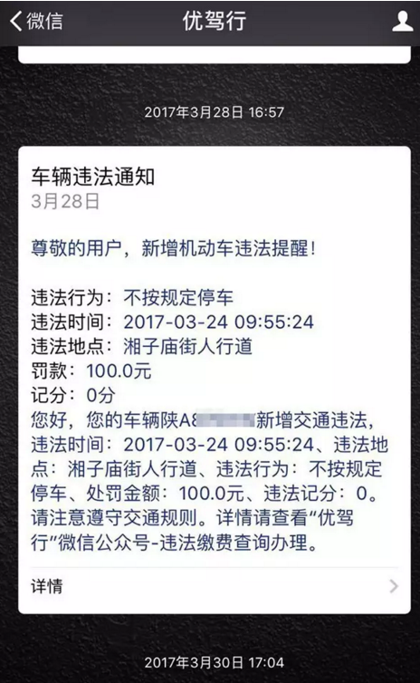
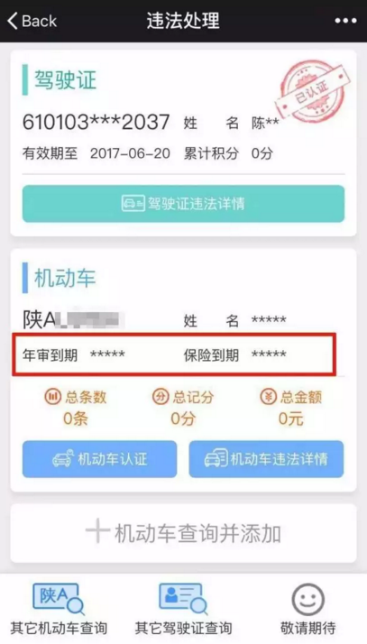
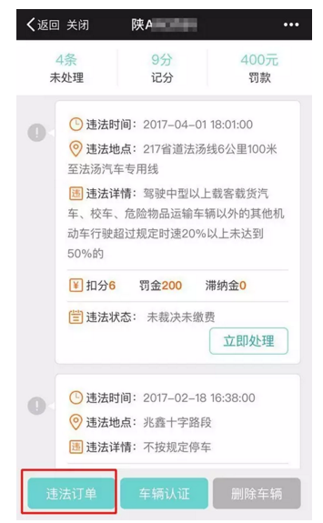
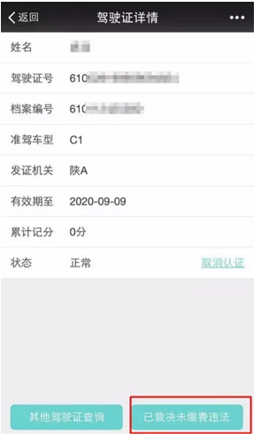

亲爱的用户，很高兴的通知您，优驾行 微信功能升级啦 ，前方高能！请“减速慢行”，快来看看到底发生了什么？
新升级的几大功能：提醒功能 | 违法订单查询 | 驾驶证违法查询，提醒让你更贴心、处理速度更便捷、业务操作更简单......快来看看具体怎么使用？
温馨提醒：以下步骤仅针对新手操作，如果您已经绑定车辆或者认证了车辆 / 驾驶证，可以直接进入违法详情查询。
新增【提醒】功能，有了交通违法，自己都不知道怎么回事儿？现在不用担心一旦有了新增违法，优驾行温馨推送，让你可以及时收到违法信息提醒。
同样的，进入【违法处理】车辆什么时候该年审？保险到期时间？.....让你一目了然，少去很多担忧。
如何看到、收到提醒？记住这点很重要！车辆认证！认证！认证成功后即可看到年审、保险到期提醒！同时，可接收到新增违法信息主动提醒！很重要！
1、点击微信菜单栏下方“违法缴费” — 点击蓝条“机动车查询并添加”，输入车牌号、发动机号及验证码，点击“查询并添加”；
2、进入违法详情页面，在最下方，直接点击“车辆认证”进入认证页面；
3、输入车主姓名、发动机号、验证码，完成“车辆认证”，查看提醒。
对自己的历史不清楚？怎么行！
点击微信菜单“违法缴费”——进入“机动车查询并添加”添加成功后进入违法详情页面
点击左下角【违法订单】，可查询所有违法订单记录（未支付成功）
新增【驾驶证】违法查询和以往的驾驶证信息显示不同，此次，不仅可以看到累计记分，还可查询其他驾驶证和已裁决未缴费的违法，驾驶证详细页面。
说了这么多，不妨自己动手体验看看，处理违法之外，这些贴心的功能，你是否都get到了？更多功能升级中，敬请期待！在使用中，如果你有任何疑惑、建议，都可以随时留言给我们，让我们一起变得更好！